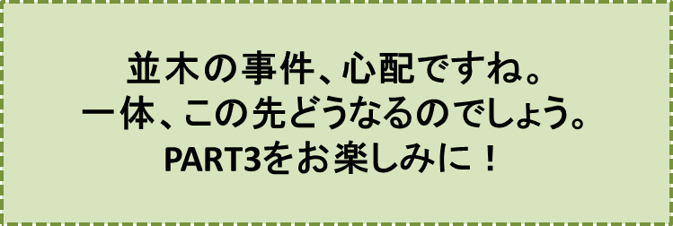

―――― ・ ―――― ・ ―――― ・ ――――
確かに、この朝の事件は、町全体に暗い影を投げかけました。子供達はリンゴ並木のリンゴ達を見る度に心を痛めましたし、大人達は大人達で、どうすれば今後こういった事件を防ぐことができるだろうか、どうすれば幼い子供達の心をこれ以上傷つけないですむだろうか、といったことを話し合ったりしていました。
11月の祝日、多分、「文化の日」の午後のことだったでしょう。牛乳屋の与平小父と衣料品店を経営しているハチロー小父とが、製粉工場の前でバッタリ出会ってから、お互い挨拶も抜きで、あのいまわしい“リンゴ泥棒”のことを口にしながら、リンゴ並木のある大通りを、重い足取りで歩いていました。
「与平さん、私の考えでは……いや杉村先生も同じ考えなんだけど、並木のリンゴを盗った連中というのは、……こ、こいつは勿論確かなことではないんだけれど、……登山に来る連中だと思うね。彼らはこの並木道を通って帰るものね……。
おっと！ 前の方から子供達が来る。もうこの話は止そう。いいかね」
ハチロー小父の話に、暗い表情で耳を傾けていた与平小父は、子供達と聞くと急に力を取り戻し、元気一杯、子供らに向って大きく手を振り、笑顔で話しかけました。
「よぉー。元気そうだな。どうやら、少しも落胆などしていないようだ。そうだろうよ。この与平が、お前さん達の百万の味方だからな」
子供達は、にこにこ、明るい笑顔で、与平小父、ハチロー小父を取り囲みました。ハチロー小父が優しく尋ねます。
「君達、朝から見かけなかったけど、どこへ行ってたのかな？」
「僕達、山へ行ってたんだ。杉村先生と一緒にね」
「ほう、山か、小父さん達も行きたかったな！ 良かっただろ、この天気、この空気そして高原の木々が、君達の心をなごませ、勇気づけただろうね！ 気晴らしには、山登りが一番だ！」
ハチロー小父の心もすっかり晴れたようです。
……しかし、一瞬ではありましたけれど、子供達の顔には、はっきり“寂しさ”が漂いました。
「リンゴ会」会長の三郎が、皆を代表して、口を開きました。
「山はとても、……それは、とても綺麗でしたよ。でもここでも、耐えられない程、いやな景色を見てしまったのです。……僕達は、そこを目をそむけながら駆け抜けました……」
三郎は、ふうっと一息ついで、続けます。
「白樺の木が荒らされていたのです。白樺の木達がとても可愛いそうで、僕達は、目をつむるようにして走り抜けました……」
この三郎の言葉が殆んど終わらないうちに、与平小父は、顔を真っ赤に上気させながら言いました。
「おぉっ、絶対許さんぞ！ きっと捕まえてやる。引きむしった白樺の皮の数だけ、ぶんなぐってやる！」
ハチロー小父は、怒りの頂点に達している与平小父に、“冷静に”“冷静に”というように制してから、子供達に声をかけようとしました。
……しかし、ハチロー小父の方が、与平小父よりもずっと興奮していて、最初は、言葉になりませんでした。
「可哀想に、“走り抜けた”と言ったよな。おぉ、もう一度言っておくれ、小父さん達が決して忘れないために。
公徳心のない連中だ。奴等は、山に登りに来て、美しい大自然の景観に感嘆の声を上げながら、その景観を傷つけて帰っていく……。
白樺の皮だけではない。夏の頃には、高山植物をどっさりリュックに詰めて持って帰る。都会に持って帰っても、枯れてしまうに決まっているのに……」
子供達も与平小父も、この言葉にうなずき、溜息をつきました。
ハチロー小父は暗い表情で話を続けます。
「……だが君達は、もっと高い所にある白樺の木や高山植物は、殆んど荒らされていないことを知っているだろう。……でも、10年程前は目も当てられない状況だったのだ。山登りにくる人達が、争うようにして白樺の皮を剥（は）いで、持ち帰ったからね。
そこで小父さん達は、集って何回も相談をし
“巡査さんにパトロールしてもらおう”
“誰か、見張りをつけておこう”
などと、色んな意見を出したんだ。でも、すごい経費がかかることが分かり、結局、到底無理ということになってしまったのだよ……。とても残念だったけどね」
子供達は、初めて聞く話に目を丸くします。それからどうしたのか、その先を是非聞きたいなぁ、と思いました。
ハチロー小父は子供達の気持ちが手にとるように分かったのでしょう、胸を張り、自信たっぷりの表情で話を続けます。
「立札を立てることにしたんだ。白樺の木の数に負けないぐらい沢山立てたのさ。結果は大成功！」
耳を傾ける子供達の顔に笑顔が戻ります。
ハチロー小父は一層胸を張って話を続けます。
「立札を立ててからは、殆んど荒らされなくなったからね。……私達は、大満足だった」
ハチロー小父は、ここで大きくため息をつき、再び、とても暗い表情になりました。
「そのかわりにね。今朝、君達が見た下の方の白樺林が、荒らされ始めたのさ」
与平小父は、ハチロー小父の声をさえぎるように、“ポン”と大きく手を鳴らし
「分かった、分かった、良い方法が浮かんだ。君達、リンゴ並木にも立札を立てようじゃないか。大都会では物を盗んでいく人が多いために、戸締りを厳重にしているそうだ。リンゴ並木をそのままにしておくことは、リンゴ泥棒から見れば戸締りを全くしていない果物屋みたいなものだった。あぁ、本当にうかつだった。
“ボク達のおリンゴ、取らないで”
こんなことを書いた立札を、沢山、立ててみようじゃないか。さぁ、これで事件は一件落着だ」
与平小父は、一息つき、一層目を輝かせて続けます。
「君達。小父さん達と一緒に“万歳”を叫ぼう。以前の元気を取り戻そう」
「さぁ、小父さんの声に続けなさいよ。
“リンゴ並木、万歳！”
」
子供達も叫びます。
“リンゴ並木、万歳”
与平小父は、首をかしげました。
「なーんだ、少しも元気がないぞ。声に力がこもっとらん。
さぁ、もう一度、
“リンゴ並木万歳！”
」
この声に子供達が応えます。
“リンゴ並木万歳”
「いかん、いかん、どうしてだろう。声に力がこもっとらんなぁ。
あぁ、ひょっとするとこれは夕暮れのせいだ。もう日は、とっぷり暮れている。お家(うち)の人達も心配しているだろう。早く帰ろう。お家（うち）に帰ろう」
♪♪♪♪コーヒーブレイク♪♪♪♪
